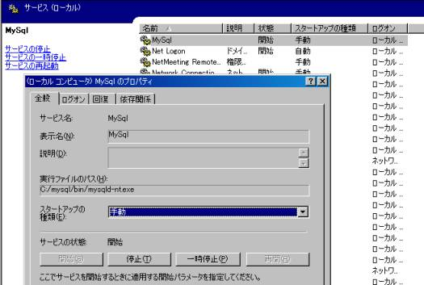
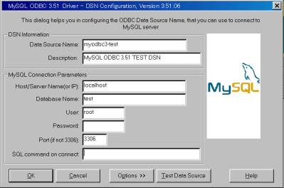
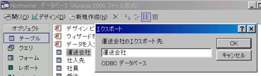
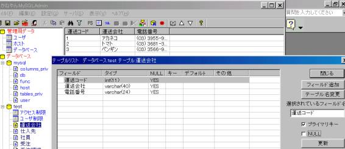
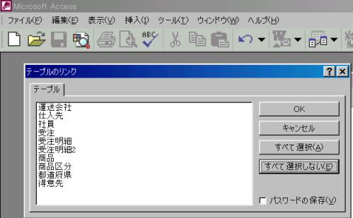
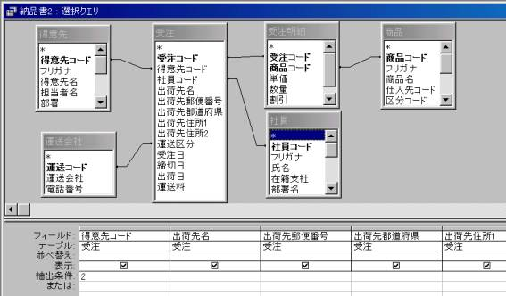
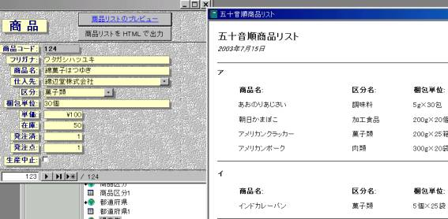
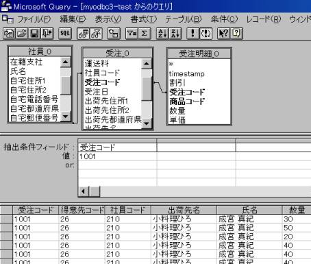
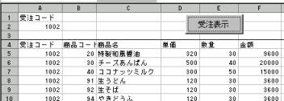

Windowsから使うMySQL 班石悦夫 ２００３年７月１８日
１．MySQLのインストール
http://www.mysql.com/ からダウンロード mysql-4.0.13-win.zip
copy c:\mysql\my-large.cnf c:\my.cnf
default-character-set=sjisをmy.cnfに記入
Windows XPでは管理ツールのサービスで起動

２．ODBCインストール MyODBC-3.51.06.exe

３．MS-ACCESSからMySQLへテーブルを移行
３－１．テーブルをMySQLへエクスポートする

３－２．かねやんMySQLadminで主キーを設定する（http://www.mmdb.net/m_kaneko/）

かねやんMySQLadminはデータベースやテーブルの作成、変更、削除。システム情報の表示、CSVファイルからのインポート、エクスポート等が出来ます。
３－３．元のテーブルの名前を変更しリンクする

４．MS-ACCESSからMySQLを利用する
ＯＤＢＣ経由での利用
他のＤＢ（オラクル等）、MySQL、MS-ACCESSのテーブルを混在して利用可能
４－１． クエリの作成

４－２． フォーム、帳票の作成

４－３．MS-ACCESSランタイム版（無料配布可能）の利用方法
・ランタイム版のインストール(Office Developer)
・ＯＤＢＣインストール
・ＯＤＢＣ定義をregeditを利用してコピーする
５．Excelでの利用
Excelは一般ユーザでも利用しやすい
複数の取引先に少しずつ違う形式のレポートが必要な場合
Microsoft QueryやVBでMySQLデータを取り込み
ユーザが帳票を作成できる。システム部門の負担が軽くなる。
変化に対応しやすい。
Excelデータをメールで取引先とやりとりできる。
５－１ Microsoft Query

５－２．ExcelのVBを利用してMySQlのデータを利用
MS-ACCESS経由での利用
ODBC経由での利用
Excel上の値を抽出条件にして結果を返す
